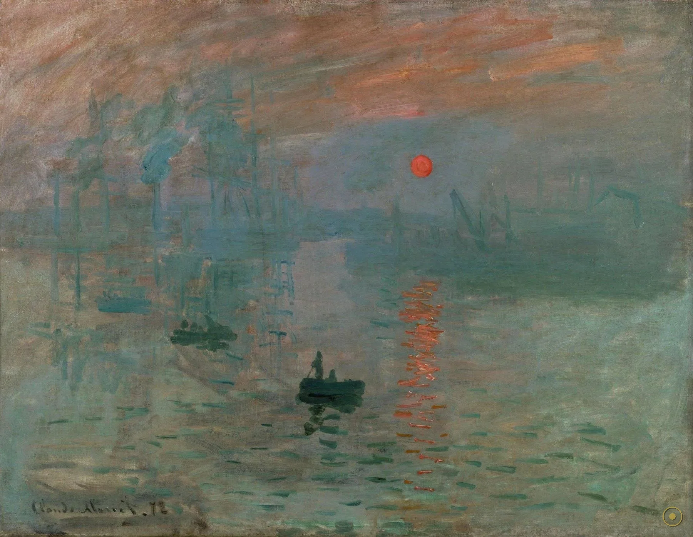
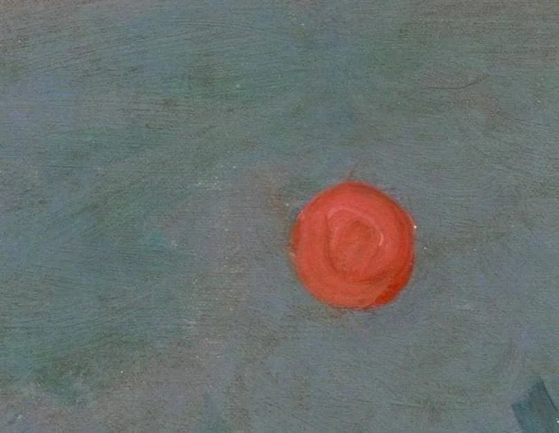
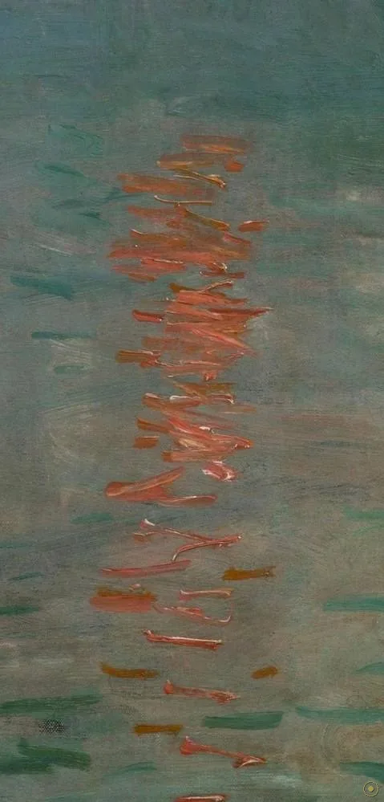
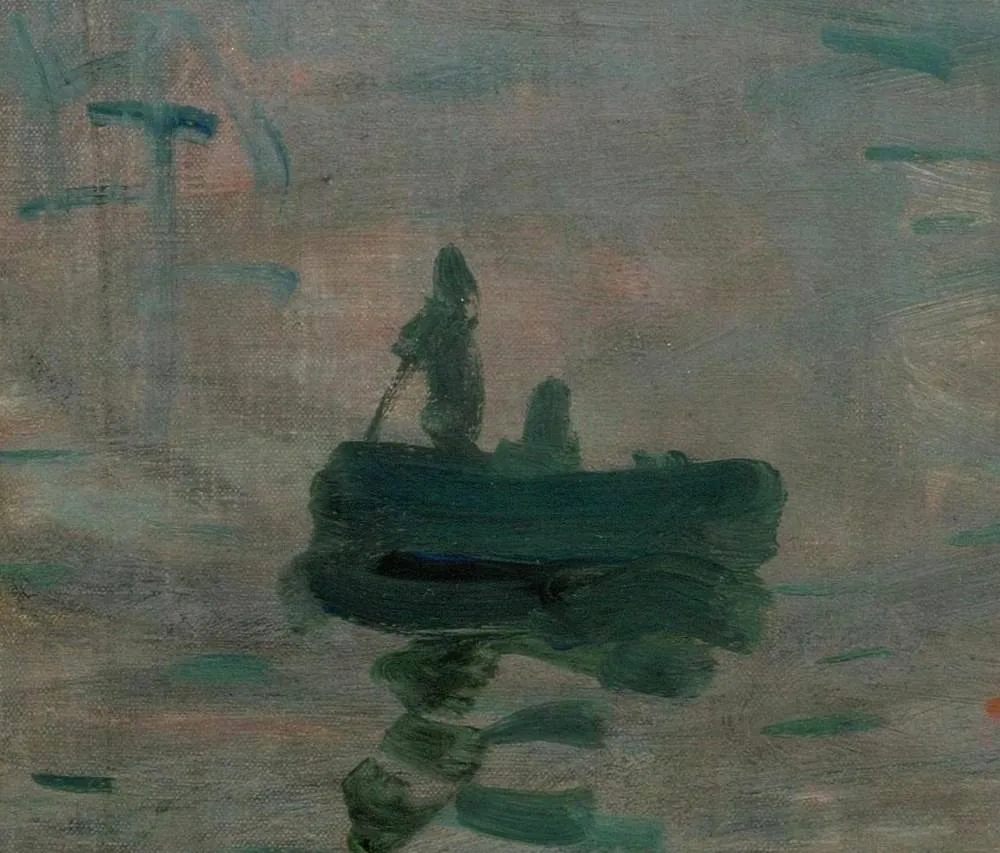
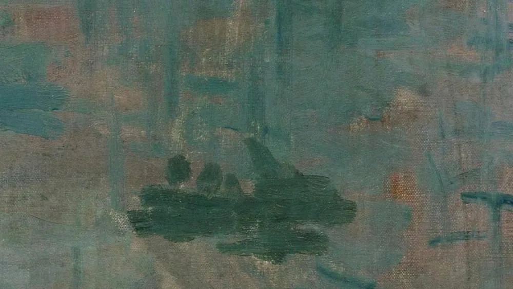
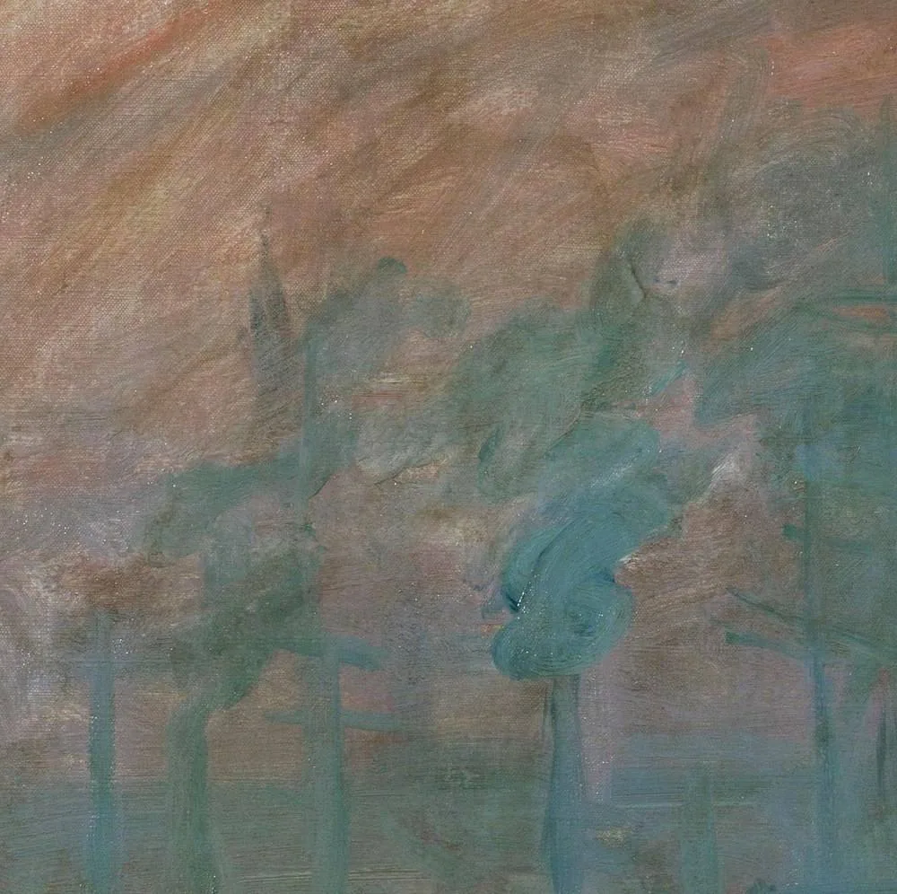
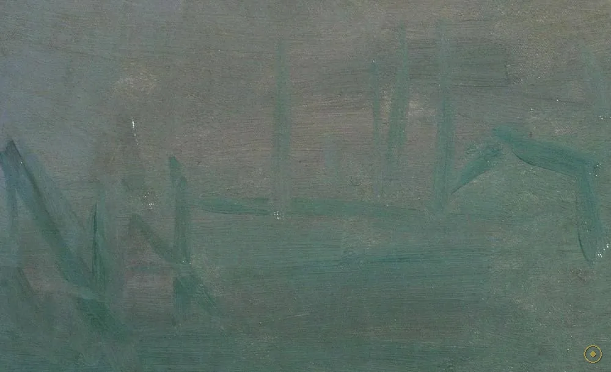
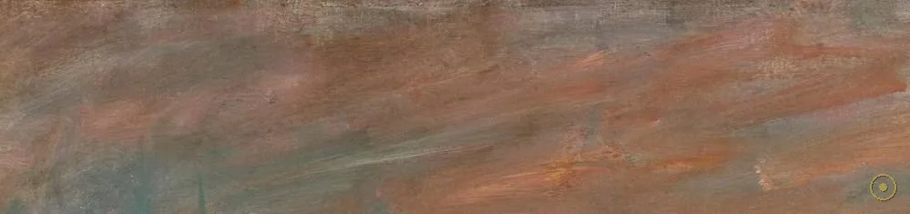
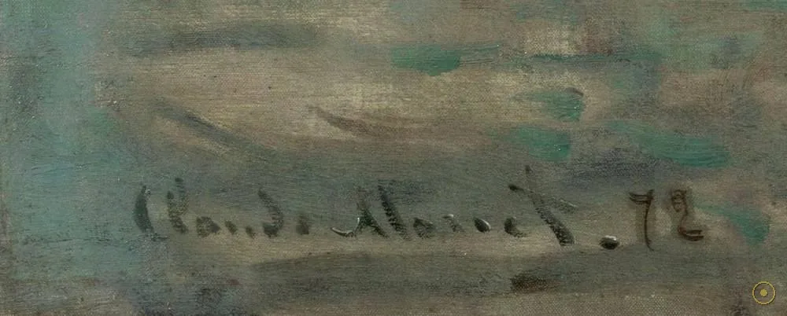

「Impression, soleil levant.」——印象，日出。这两个词，后来成了整个西方现代绘画的起爆点。
1874 年，一幅不起眼的小画在巴黎的一场独立展览上亮相：48×63 厘米的画布上，橙红的太阳悬在灰蓝的雾港之上，笔触松散得像是没画完。它的作者克劳德·莫奈（Claude Monet）给展览目录起的名字，不过是「印象」。谁也没想到，一位刻薄的批评家会从这两个字里，为一场艺术革命取下名字。
这名字起初是骂人的。保守派评论家路易·勒鲁瓦（Louis Leroy）在报纸上模仿莫奈的口吻写道：「印象——我对此确信不疑……壁纸的胚胎状态都比这幅海景画得完整。」他本想嘲笑这群画家的「潦草」，却让「印象派」一词不胫而走，被画家们将错就错地收下，成了流派的冠名。一幅画，阴差阳错地给一个时代命了名。
所以这一页不打算把它供上神坛，而是带你回到那个雾散的清晨：从画面正中的橙红太阳，到左边斜插的远洋桅杆，再到右边沉默的工业烟囱。注意那一大片「没画的东西」——雾。正是这片空白，才是莫奈真正想画的。
—— 莫奈自述（据英译转译）｜勒鲁瓦《印象派画家的展览》，1874 年《喧噪报》
在本页左下角，可点亮一段与这幅画同乡的法国钢琴。
从正中的太阳，到右侧的烟囱——每一个光点，都是一处可以验证的视觉事实。

点击画面中的 ✦ 光点 查看画面细节 · 图片来源：Wikimedia Commons（公有领域）
它只用一个早晨被画下，却用一个世纪被记住——中间隔着一场骂名与一次失踪。
1872 · 勒阿弗尔
莫奈从勒阿弗尔港的酒店窗口望出去，港口还泡在晨雾里。他没有画港口的「样子」，而是画「看见它的那一瞬」——橙红的太阳、几根斜插的桅杆、一团化不开的灰蓝。这幅画属于他回乡所作的六幅勒阿弗尔港系列，却意外成了最出名的一幅；据他晚年自述，它只在一个清晨一挥而就（具体日期学界仍有争议）。
➤1874 · 巴黎
首届印象派画展上，保守批评家勒鲁瓦以「印象派」讥之，写下「壁纸的胚胎状态都比这海景画得完整」。本想羞辱，却让「Impressionism」一词不胫而走，被这群画家欣然接受，反成了流派的冠名。一个随手取的谦称，就这样变成了一面旗帜——艺术史少有如此「因骂得名」的流派。
➤1985 → 1991
1985 年，画在巴黎玛摩丹·莫奈美术馆被盗，失踪五年；1990 年于科西嘉被找回，1991 年重新展出。它用一次离奇的失踪与归来，把自己写进了 20 世纪的传奇。今天，它仍是该馆的镇馆之宝，也是全球观众排队朝圣的原点。

真事一 · 它「顺手」起的名，却命名了一个时代。1874 年首届独立展览，目录征集标题，莫奈说「就写『印象』吧，这算不上勒阿弗尔的风景」。他没料到，保守派批评家路易·勒鲁瓦在《喧噪报》上以《印象派画家的展览》为题写嘲讽评论，「Impressionism」一词从此成为流派之名。
真事二 · 它曾被偷走，又戏剧性地归来。1985 年，画从玛摩丹·莫奈美术馆被盗（作案者 Philippe Jamin 与 Youssef Khimoun），失踪五年；1990 年在科西嘉被找回，1991 年重新展出。今天它仍是该馆的镇馆之宝，也是印象派最富戏剧性的一段博物馆往事。
真事三 · 莫奈可能只画了一个早晨。莫奈晚年对勒阿弗尔艺术史家若扬（Maurice Joyant）称，这幅画完成于 1872 年 11 月 13 日清晨约 7:35，从二楼的阿姆拉帝酒店（Hôtel de l'Amirauté）窗口一挥而就——但这一具体日期学界仍有争议；可以确定的是，它属于莫奈回乡所作的六幅勒阿弗尔港系列之一。
※ 委约与命名经过据莫奈自述与勒鲁瓦 1874 年《喧噪报》评论转述；失窃与归还为美术馆公开记录；具体作画日期学界存疑。引文据英译转译，措辞或因译本而异。
把画面拆开：每一块色斑，都是一次对「看见」的重新定义。
橙红圆盘几乎与天空同亮——高湿度清晨的真实，也是全画唯一清晰的圆心。

竖直的橙色光柱被短笔触捣碎，在蓝紫波光里轻轻跳动——印象派最典型的一笔。

近得见船帮、却无人影；与远处桅杆烟囱形成水平—垂直的安静对峙。

被雾擦去细节的船身，是莫奈压扁透视、学自浮世绘的证据。

为托起太阳，莫奈抹去左侧房屋，把背景让给高耸的帆船桅杆。

蒸汽船的排烟管，是战后复苏的工业法国最诚实的注脚。

占据最大篇幅的「空白」，承载了整幅画的湿度与情绪。

一个随手取的谦称，反被用作整个流派的冠名——预言般的签名。
1874 年首届独立画展，莫奈、德加、毕沙罗、雷诺阿、西斯莱等约三十人展出逾两百件作品，约四千人参观。勒鲁瓦的嘲讽文章反而让「印象派」之名流传。很快，这个词从贬义被画家们收编，成了自我标榜的旗帜——艺术史少有如此「因骂得名的流派」。
莫奈这一代不再追求清晰的轮廓与准确的透视，而是捕捉光、色、大气在某一瞬的视觉效果。他们常在户外（en plein air）作画，用破碎的笔触记录「看见的那一刻」。《日出·印象》把这套方法推到极致：形被溶解，唯有光与色被留下。
19 世纪下半叶，浮世绘大量流入欧洲，莫奈、惠斯勒等都曾收藏。葛饰北斋与歌川广重的高视点、压缩空间与不对称构图，清晰地留在《日出·印象》里——抬高的地平线、被雾压扁的纵深、偏重的左半边，都是「和风」而非「古典」的章法。
此后一个世纪，从凡·高到抽象表现主义，「主观印象优先于客观再现」逐渐成为现代艺术的底色。今天，《日出·印象》作为玛摩丹·莫奈美术馆的镇馆之宝，仍是全球观众排队朝圣的对象——它证明了：有时，定义时代的不是巨作，而是一幅敢于「没画完」的小画。
莫奈于勒阿弗尔港、自酒店窗口作此画，属六幅港口系列之一（具体日期学界有争议）。
四月，于首届印象派独立画展展出；勒鲁瓦嘲讽成文，流派得名。
莫奈之子米歇尔将大批作品遗赠玛摩丹美术馆，此画入藏。
被盗、于科西嘉寻回、重回展墙——一段传奇的博物馆往事。
玛摩丹·莫奈美术馆镇馆之宝，印象派全球朝圣的原点。